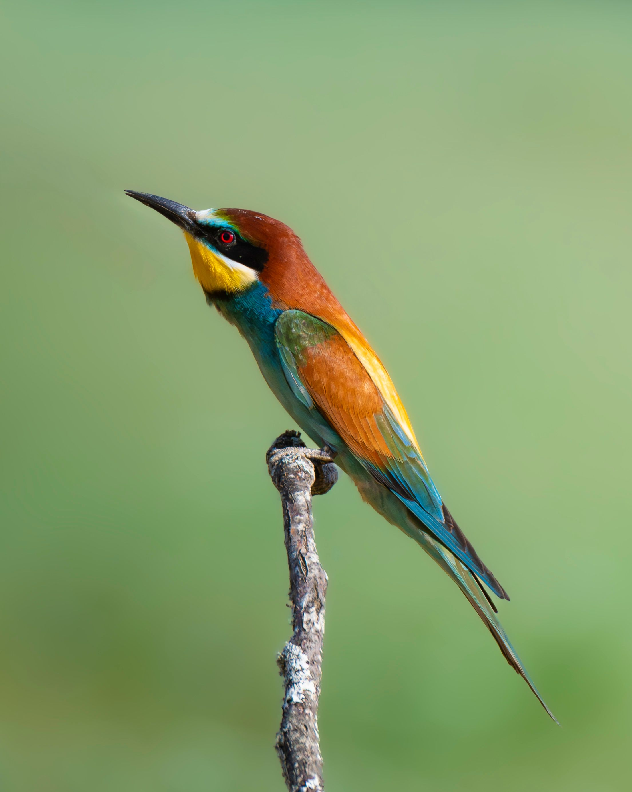

The European Bee-eater is one of Europe's most vividly coloured birds, with a turquoise-blue underside, golden-yellow throat, chestnut crown and back, green wings and a black eye stripe. It is a highly aerial insect hunter that catches bees, wasps, dragonflies and other flying insects while in flight. Despite its name, bees make up only part of its diet. After catching a stinging insect, the bird may return to a perch and manipulate the prey before swallowing it. European Bee-eaters are strongly migratory across much of their range, breeding mainly in southern and central Europe before travelling to Africa for winter. They often nest colonially by digging tunnels into sandy or vertical banks.